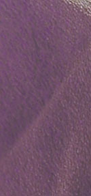
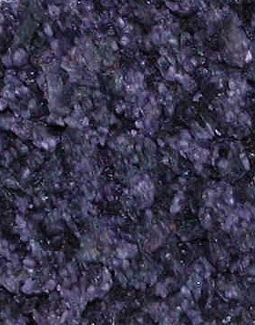
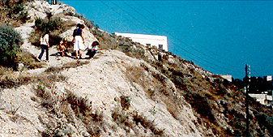
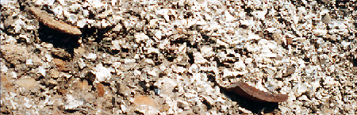
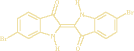
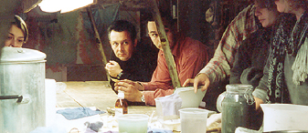
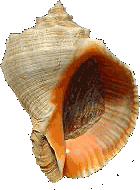

Elle n'est toujours pas très employée en
peinture. Il est possible d'en faire un pigment, mais son emploi
principal, complexe, l'identifie davantage comme un
colorant, essentiellement tinctorial. Elle a cependant servi d'encre et peut être
utilisée de différentes manières dans le domaine des arts plastiques et
avoisinants.
Petite
histoire de la pourpre
Produite par les Phéniciens (teinture avérée en 1500 BC à Ougarit, puis,
à très grande échelle et durablement à Tyr et Sidon), dans les Cyclades et en
Israël, elle symbolisa
un haut rang social chez les Gréco-romains ainsi que dans nombreuses
civilisations. A Rome, elle était l'apanage des consuls, des triomphateurs puis
des empereurs (color oficialis, exclusive sous peine de mort sous Néron). Dans l'empire romain
d'Orient, elle représenta la dignité impériale : les enfants royaux nés sous
le règne de leurs parents étaient dits "porphyrogénètes",
c'est-à-dire "nés dans la pourpre". On utilise alors celle-ci comme teinture, mais aussi comme encre pour les documents officiels ou religieux,
selon des modalités d'emploi complexes.
Pour les rois francs et les évêques
et cardinaux catholiques, la pourpre, arborée par le biais du vêtement, était le symbole d'un pouvoir. Des exemples du même type sont innombrables de par le
monde.
 Le procédé de production fut rigoureusement fixé par
Rome au IIème siècle AC, peu avant que la Chine l'acquière (IIIème siècle AC). Le savoir-faire se perdra
progressivement, très durablement. C'est un cas exceptionnel d'amnésie qui évoque, on ne
le dira jamais assez, l'étymologie du mot pourpre.
<Photo Dotapea ©
Tous droits réservés
Au XXème siècle seulement, en découvrant sa composition chimique, on
commence lentement à reconstituer la méthode de teinture (cf.
Aujourd'hui).
Longtemps, la pourpre, produit cher, exigeant une main-d'oeuvre
importante et un grand savoir-faire, ne servit que comme teinture destinée aux
puissants inquiets, désireux d'afficher leur pouvoir, leur richesse. Sparte semble se
distinguer par un dédain affiché de cette couleur.
A cause d'un attachement sincère à la pourpre ou d'intérêts économiques, les
imitations, (à base d'indigo particulièrement), ont parfois été interdites (Salomon).
Des parchemins de grande qualité auraient été teints à la
pourpre.
Extraction,
espèces et spécificités
La pourpre était extraite de mollusques
gastéropodes, les murex (dits aussi escargots de mer), beaux animaux à la
coquille hérissée d'épines.
La teinturerie n'est pas son seul champ d'application :
Le purpurissum désigne depuis l'Antiquité une pourpre
pigmentaire, sèche. Il existe des moyens contemporains de la créer en
éliminant les protéines et les graisses à l'aide de produits caustiques.
Parallèlement, il existe depuis
longtemps des procédés - tinctoriaux ou non - ne faisant pas appel à des telles chimies :
- les procédés directs. Les glandes
de murex ne sont pas placées dans une cuve à fermentation, mais
appliquées directement. Le papier peut être traité de cette façon.
- le procédé à la cuve à l'hydrosulfite de sodium
(Na2S2O4), un agent réducteur. Contemporain, il est rapide.
Usuellement, quel que soit le procédé, dès lors que
l'on ne synthétise pas la molécule colorante, on extrait le suc d'une petite
glande ("hypobronchiale") de l'animal que l'on met à macérer en attendant que toutes les
glandes soient réunies. Comme celles-ci sont en
contact avec l'air, elles commencent à virer en quelques heures du transparent
au jaune en passant par le vert, le bleu, au violet ou certains rouges-violets.
A cette masse on ajoute de l'eau et on commence à chauffer le bain - du moins
dans les procédés à la cuve -, et on contrôle l'alcalinité
en incorporant une lessive potassique. Après trois
jours la couleur du bain qui jusque là était violet devient bleu/vert. Dans les
jours qui suivent, elle tourne au vert foncé et finit après une semaine par être
vert clair avec un dépôt pâteux au fond de la cuve.
Il ne faut sûrement pas sous-estimer l'organisation du
travail qu'implique la quantité de murex à préparer car le prélèvement de cette glande demande une main
d'oeuvre très conséquente.
Lorsqu'un vert clair est atteint dans le bain, on est en présence d'une
substance tinctoriale, y compris dans le procédé contemporain sulfuré.
Le procédé à la cuve par fermentation met en oeuvre un traitement de l'ordre
d'une semaine au moins. Une bactérie encore mal connue pourrait jouer un rôle
dans ce processus qui devient visuellement sensible à
partir du troisième jour. Elle provoquerait, sous certaines conditions -
électrochimiques notamment - ce que l'on nomme une réduction, condition sine qua
non pour obtenir une teinture solide. Ce que l'on entend par
réduction est en fait un processus
complexe parfaitement décrit par Chris Cooksey (cliquer
ici), qui correspond
concrètement à une
sorte de retour en arrière chromatique (jusqu'au vert) accompagné d'une meilleure imbibition des
fibres, garante de la permanence de la teinture. Après cette réduction, on
provoque une oxydation à nouveau dès la sortie du
bain. Bolinus brandaris demande, en plus de cette mise en présence de
l'air, une exposition au soleil.
Tous ces phénomènes expliquent :
* les différences de tonalités chromatiques
entre les différentes productions car toutes n'ont pas forcément répondu à des
normes de fabrication. Il est vrai que ce que l'on nomme pourpre dans le langage
courant correspond tantôt à un rouge froid, tantôt à un mauve, tantôt à un
violet.
* le fait que le procédé de teinture soit
potentiellement aussi déterminant que le coquillage choisi. Plusieurs
espèces de coquillages ont pu être utilisées pour obtenir une couleur finale, comme ce
pourrait avoir été le cas selon Pline dans la fabrication de la pourpre tyrienne
(information non confirmée).
Les coquillages
Selon une opinion répandue dans certains marchés où, d'ailleurs, on vend de
la pourpre synthétique pour de la pourpre naturelle,
* le colorant pourpre violacé habituel serait issu du coquillage du murex femelle,
* un étrange colorant turquoise qui soi-disant proviendrait du murex mâle,
en fait d'origine particulièrement douteuse.
Ces affirmations sont hors de propos car d'une part, la couleur turquoise, surtout sous forme de poudre,
a bien peu de chances de passer pour une véritable variété de pourpre, d'autre
part, les murex sont hermaphrodites. D'un point de vue scientifique, le genre de l'escargot de mer pourrait avoir
un effet sur la couleur, mais ce n'est pas encore un fait confirmé.
Une pourpre naturelle possède normalement une odeur d'algue qui permet de
l'identifier.
Il existe plusieurs variétés de coquillages présents sur
les côtes méditerranéennes et atlantiques jusqu'à la Mer du Nord, et au-delà,
partout dans le monde, donnant des pourpres variées au finale, sur des bases
chromatiques à cru (au naturel, avant teinture) elles-mêmes déjà variées. Mentionnons
particulièrement :

* Hexaplex trunculus (plus
approximativement, Murex trunculus, poivre, murex tronqué ou
Phyllonotus trunculus) donne, on le voit
ci-contre, une couleur tirant plus facilement sur le bleu que Bolinus brandaris. Il s'agit ici d'une image de glandes hypobronchiales de
Hexaplex trunculus séchées. Ce
séchage en présence de sel est également une préservation qui permet par exemple
de transporter le produit, donc de "délocaliser" le lieu de production des
teintures. Cette préservation a
un secret, bien connu des fabricants de levain et de vinaigre : il faut
adjoindre au bain un restant des cuves précédentes.
Photo Inge
Boesken Kanold ©>
Tous droits réservés
*
Bolinus brandaris (plus imprécisément Murex brandaris), qui donne des teintes tirant sur le
rouge et
Stramonita haemastoma (qui correspond sensiblement aux appellations
Purpura haemastoma, Thaïs haemastoma ou encore bouche de sang). L'une de ces variétés, correspondant en principe -
sous toute réserve - au
buccinum (appellation utilisée d'abord par Pline, mais ayant pu désigner,
par l'intermédiaire des mots
buccin et
buccinidés - Linnée -, des variétés ne produisant pas de pourpre), fut récoltée sur la façade atlantique.
Bolinus cornutus, notamment, est bien un buccinidé rare présent sur la côte
atlantique africaine, mais il n'est pas connu comme producteur de pourpre.
Bolinus brandaris est bien que moins colorant que Hexaplex trunculus.
Stramonita haemastoma semble n'avoir joué qu'un rôle
de second plan.
*
il faut aussi mentionner les pourpres japonaises et américaines, également
réputées. Voir ci-dessous.
Il y a de grandes différences de traitement en fonction des variétés. Par
exemple, Bolinus brandaris a besoin de soleil et d'oxygène, Hexaplex trunculus d'oxygène
seulement. Il y a aussi des tendances chromatiques, mais la versatilité des colorations
en fonction des traitements
est également déterminante.
Les
collines phéniciennes
A Tyr et Sidon, d'après Pline, la fameuse pourpre locale aurait été obtenue
en teignant les tissus en deux bains (Stramonita haemastoma puis
Bolinus brandaris),
mais le procédé n'a jamais pu être reproduit de manière satisfaisante.
D'ailleurs, il n'est absolument pas confirmé que ces murex aient été employés et
non trunculus ou d'autres espèces. Quelle était la couleur obtenue, cela demeure un mystère. Aussi les
appellations "rose tyrien" et "pourpre royale", dont certains fabricants de
couleurs se sont emparés, n'ont-elles qu'une valeur poétique.

Liban
1979 - Photo Inge
Boesken Kanold ©
Tous droits réservés
Les véritables collines faites de coquilles de murex (photos ci-dessus et
ci-dessous) témoignent d'une intense
activité économique autour du coquillage dans la région. De fait, Friedlander a
calculé que pour obtenir l'équivalent de 1,4 gr. de matière colorante
synthétique, il faudrait traiter
douze mille
Murex brandaris.
Même si trunculus est moins exigeant (car plus colorant), on voit bien que c'est
le traitement de la pourpre qui fait
sa valeur prestigieuse plus que la rareté de la matière première. Ce n'est pas
un cas unique dans le monde de la couleur (on peut citer le
rouge d'Andrinople, par
exemple), mais cependant, c'est un fait assez rare pour être signalé.

Liban
1979 - Photo
Inge Boesken Kanold ©
Tous droits réservés
Aujourd'hui
Le murex recommence à produire de la pourpre. Des chercheurs, de rares artistes
et spécialistes en teinturerie travaillent sur cette substance. On redécouvre progressivement les procédés anciens.
Après le procédé de base, de nombreux problèmes se sont soulevés. L'exploration
des comportements des différents murex fut une première tâche. Puis Inge Boesken
Kanold (re)découvre le moyen de conserver le produit frais pour une utilisation
ultérieure. D'autres apportent
progressivement leurs découvertes et travaillent sur différentes questions en suspens. Ce secteur de recherches est
vivant... ou renaissant. La pourpre-phoinix
(cf. étymologie) mérite plus que jamais son
nom.
On rencontre, comme dans le passé, des imitations. Des synthèses
diverses qui sont vendues notamment au Maroc, comme
des pourpres. A l'opposé, des artistes et des créateurs - encore très rares il
faut le dire - utilisent actuellement des procédés beaucoup plus sérieux faisant
intervenir une pourpre authentique traitée soit à l'aide de produits
contemporains, soit d'une manière plus naturelle.
L'identification du principe colorant de la pourpre a été réalisée par P. Friedlander en 1909.

Il s'agit du 6,6'-dibromoindigo, bien présent dans murex
brandaris. De fait, la similitude avec l'indigo est remarquable, à une paire de
bromes près pour ainsi dire (cliquer ici).
Les découvertes sur les procédés de teinture "à l'ancienne" datent
seulement... du XXIème
siècle grâce aux travaux de John Edmonds (2001), mais aussi de nombreux
intervenants dans le monde entier comme par exemple Joseph Doumet (1980), Otto
Elsner (1985), Takako Terada, Chris Cooksey, Patrick
McGovern et R. Michel,
Inge Boesken Kanold et d'autres.

[première
cuve à fermentation avec murex frais,
Okhra, janvier 2001, ©
Tous droits réservés]
Autre aspect actuel de la question : le murex semble
en péril de disparition dans certaines régions où il a même été
protégé - il faut dire qu'au Moyen-Orient, il fait aussi partie du patrimoine
historique. Cependant, il existe maintenant au moins un élevage en France, encore
destiné à l'alimentation à ce jour.
Bibliographie
(travaux contemporains) :
- Tyrian or Imperial Purple Dye, John
Edmonds, Historic Dyes Series No.7, ISBN 0953413365.
- The Purple Fermentation Vat : Dyeing or
Painting Parchment with Murex trunculus (Inge Boesken Kanold),
in Dyes in History and Archaeology 20, document présenté au 20ème Meeting
d'Amsterdam (2001), Archetype Publications, Londres ; pp.150-154.
-
ChrisCooksey.demon.co.uk, le site scientifiquement très bien documenté -
"incontournable" - de Chris Cooksey (en anglais).
-
Le monde des teintures naturelles,
de Dominique Cardon
Autres
pourpres
Certaines sources mentionnent le Purpura patula,
un mollusque d'Amérique centrale et/ou australe qui aurait pu être utilisé et
pourrait l'être encore. Il aurait la particularité de ne pas nécessiter un
traitement à la cuve. Les fibres textiles seraient traitées directement.

Au Japon, on distingue trois coquillages à pourpre :
* Ibonishi, un petit coquillage,
* Akanishi (image ci-contre),
* Reishi qui semble moins connu.
Nous espérons pouvoir fournir bientôt davantage d'informations sur ces
variétés.
Les fausses pourpres
On a pu parler de "pourpre française" au XIXème
siècle à cause d'un regain d'intérêt pour l'orseille.
D'autres colorants naturels, notamment à base de lichens (voir
chriscooksey.demon.co.uk/lichen - lien externe), ont été utilisés.
Beaucoup de soi-disant "pourpres" n'avaient
aucun rapport avec des mollusques. Il s'agissait d'ailleurs souvent de mélanges.
La pourpre thiogène, à base de soufre, a pratiquement disparu.
La pourpre de
Cassius (Allemagne, XVIIème siècle) est un cas très
intéressant.
Elle était principalement destinée aux arts du feu et a également disparu. Il
s'agissait d'une préparation complexe. On s'aperçut (Richard Zsigmondy, prix
Nobel 1925) que l'oxyde d'or qu'elle contenait - était
colloïdal (cf.
hdelboy.club.fr/etain.html, lien externe).
Étant donné l'enjeu économique qu'elle représente, la pourpre a été
imitée d'innombrables manières, et son nom, même, a été utilisé à des fins
variées, à toutes les époques.
_____
Note :
En principe, la
matière pourpre est un nom féminin et la couleur, un nom masculin. Ne souhaitant
pas véhiculer une distinction peu égalitaire à la "tota mulier in utero", attribuant le produit brut au
féminin et le concept au masculin - ce qui n'est pas une exception, lire
notamment encadré sur la page
consacrée à la laque -, nous employons systématiquement pour ce mot le genre
féminin sur Dotapea.com.
Retour
début de page


{kind=link}